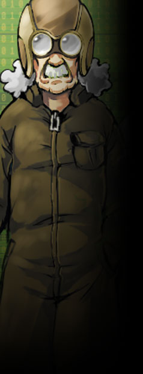

▼職人協会【 モーターソグニル 】
各層を繋ぐエレベーターの点検をはじめ、
協会・組合の形態を取る組織であるため、完全な一枚岩ではなく、
ユグドラシルの管理・維持へ直接的に関わる性質上、かなり歴史の長い組織であり、 職人気質で頑固なメンバーも多いが、寡黙な彼らの信頼は三層に渡って厚い。 現在は中層管理局スヴァリンと拠点を同じくし、日夜忙しく働いている。 公式サイト原文
中層に限らず、各層を繋ぐエレベーターの常時点検をはじめ、
代を重ねユグドラシルの維持に貢献。 職人気質で頑固なメンバーも多いが、寡黙な彼らの信頼は３層に渡って厚い。 現在は中層管理局スヴァリンを拠点とし、日夜忙しく働いている。 |
|
 |
グリンピース・ヒースメイル
|
||||||||||||||||||
|
モーターソグニル職人長の一人。作業用メットと作業着が普段着。
オルレアンとしては最古参クラスの人物であり、
エスパー異能【 ノスタルジックエレベーター 】は、
「ほ、最近物騒な話が多くて困るわい」 |
|||||||||||||||||||
公式サイト原文
グリンピース＝ヒースメイル
モーターソグニル職人長の一人。現役の職人。
アリスの父的存在のおじいちゃん。
エレベーター昇降中の間に同乗者の記憶を呼び起こし投影する
「アリスや…お前さんは本当にワシの娘の若い頃にそっくりじゃ…。」 性能：基礎５ｐステータス＋ボス特性５ｐ |
|||||||||||||||||||